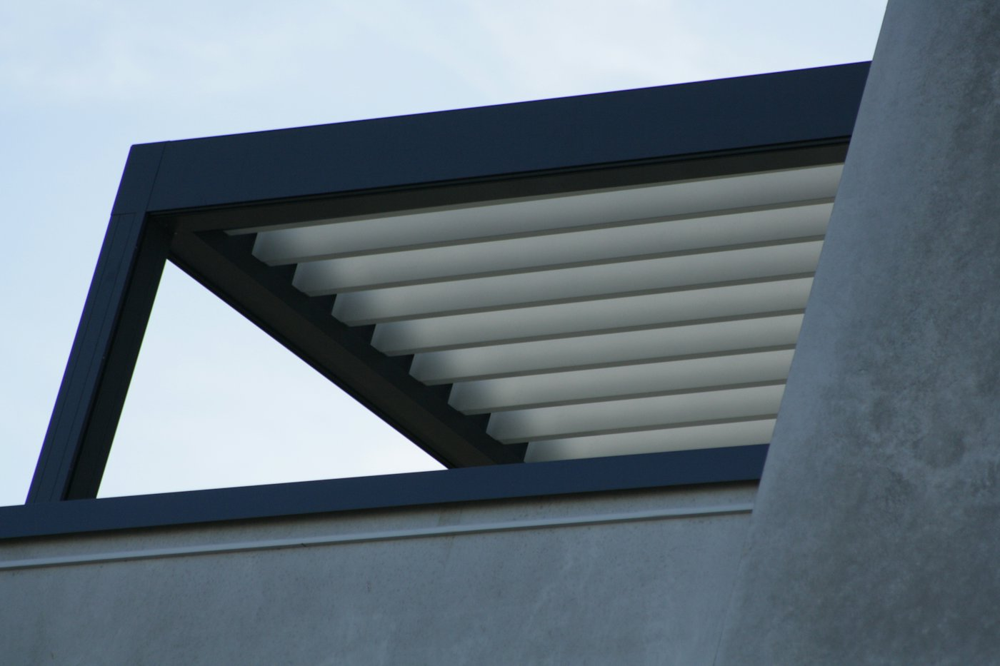
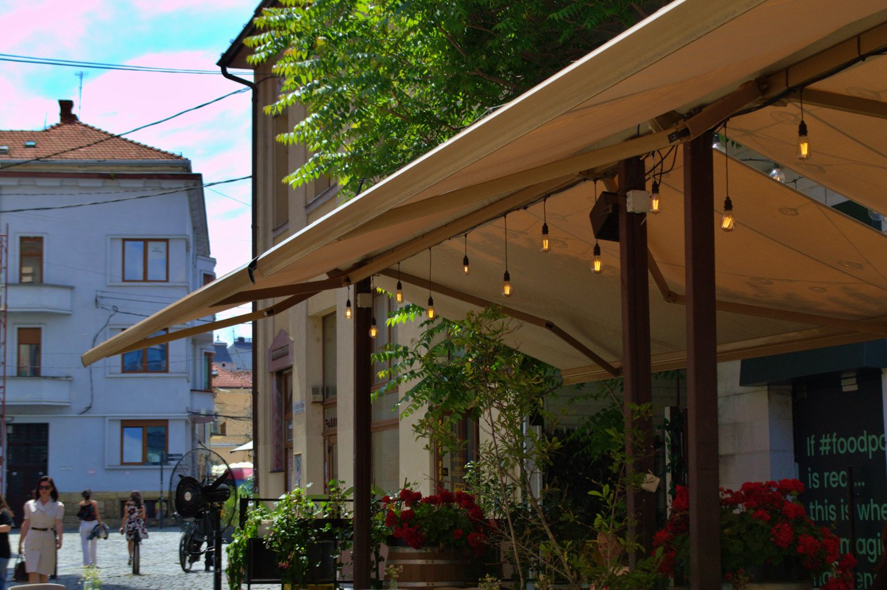
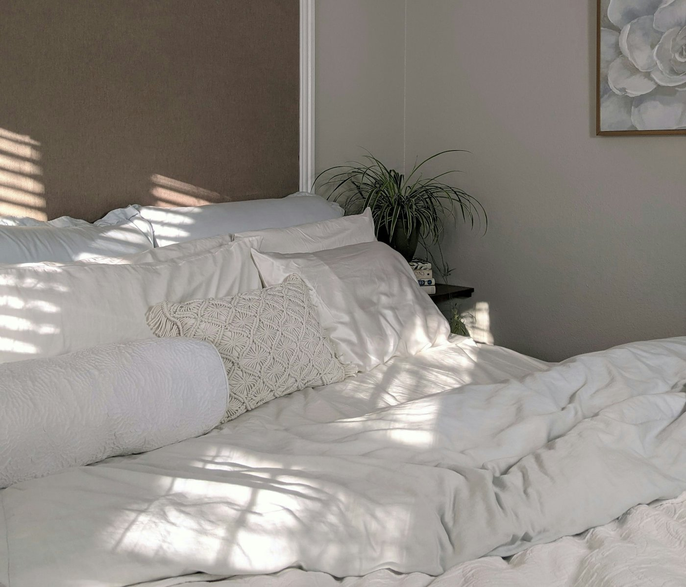
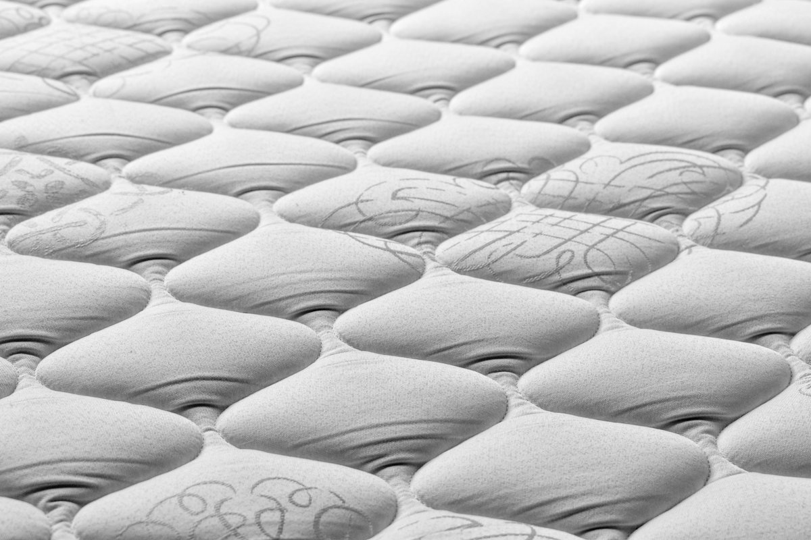

Due marchi, due voci. Una regia sola.
Di giorno si parla di ombra, vento e cantieri. Di sera si parla di come si dorme. Chi vi segue riconosce subito chi sta parlando, e voi avete un solo calendario da guardare.
bandino living
Voce tecnica e diretta. Si vede il lavoro: cantieri, meccanismi, prima e dopo.

Reel, 15 secondiAcquazzone su Cagliari. Sotto, il caffè è ancora caldo.Le lamelle si chiudono da sole: basta farlo vedere, senza una parola.

Carosello, 5 schedeVetrate scorrevoli: serve un permesso?La domanda che vi fanno tutti, con la risposta che avete già scritto sul sito.
Storia dal cantiereSimone e Piero, ore 8: oggi si monta a Pirri.Trenta secondi girati col telefono: i clienti li nominano già nelle recensioni.
Materassi & Co.
Voce bassa, da ora di andare a letto. Un consiglio alla volta, e la buonanotte in fondo.

Carosello, 4 schedeDormi sul fianco? Guarda queste tre cose.Spalla, bacino, cuscino. Poi l'invito a provarlo sdraiati in Viale Monastir.

Reel, 20 secondiCosa succede sotto la schiena.Una mano che preme, il materasso che risponde. Niente musica: si sente il silenzio.
Storia delle 22Buonanotte a tutti.La vostra firma di sempre diventa un appuntamento fisso: ogni sera, un consiglio in una riga.